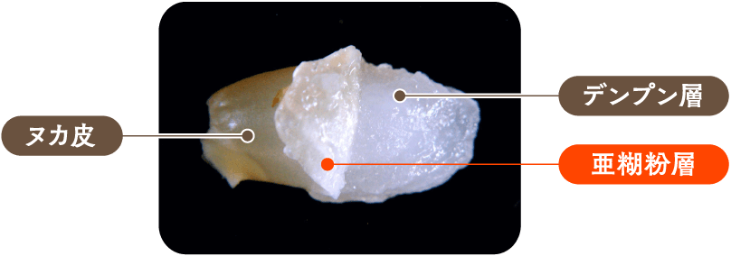
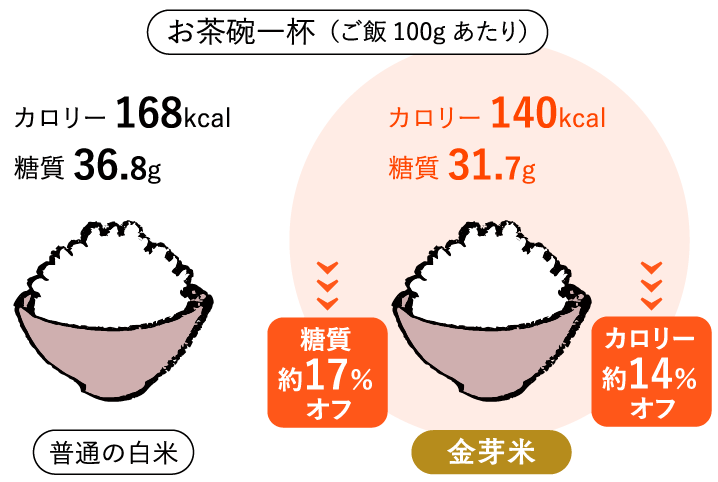
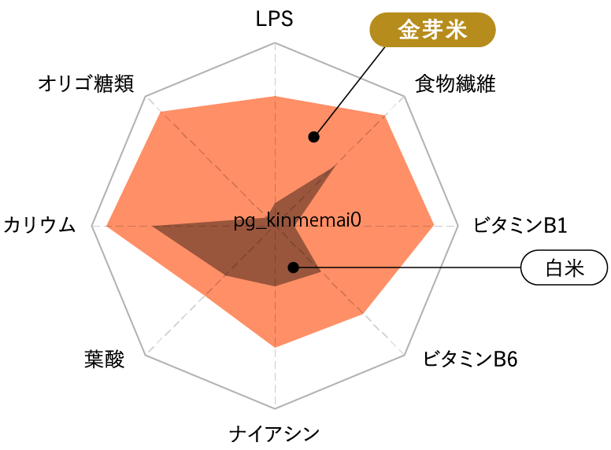
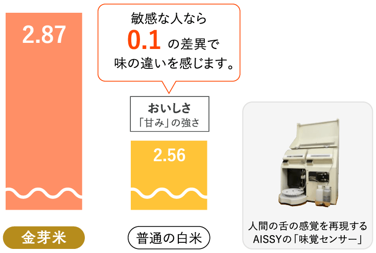

金芽米とは
新技術で磨かれた金芽米は
格別の美味しさと高い栄養価をもつ
健康時代のお米です。
漢字に隠されたヒント
昔から日本で使われている漢字。精米機や無洗米など、米の研究を続けるうちに、気づいたことがありました。
「糠（ぬか）」という漢字は、米へんに”康”と表す。逆に、「白米」は逆さに置き換えると、「粕（かす）」という字になる。もしかしたら、糠は人々を健康にし、糠がついていない白米を食べている私達は「かす」を食べているのではないか。
昭和30年頃から、日本人はお米から糠を全て取り除き白くする為だけの精米技術を発達させてきたが、それと同時に健康にとって大切なものを失っていたのかもしれない。そんな仮説の元、米本来の栄養成分を残した白米の開発が始まりました。
業界の常識を変える新発見
「亜糊粉層」
普通の白米は、糠・胚芽を取る精米がされています。しかし、研究を重ねるうちに、従来の精米過程で失われるごく薄い層に多くの旨味と栄養素が含まれていることが分かりました。
「亜糊粉層」と呼ばれる、糠と一緒に剥がれやすい繊細な層です。
-
無洗米 こぼれ話 2
糠皮をめくると、糠皮の裏側にあるのが「亜糊粉層」です。写真のように亜糊粉層は外側の糠皮と強くついている為、通常の精米では糠皮と一緒に取り除かれてしまいます。

金芽米の特徴
-
普通の白米と比べて
いつもと同じご飯の量でも、カロリー17％・糖質14%カット
金芽米は亜糊粉層が水分をたくさん吸収するため、ごはん一粒一粒ががふっくらとふくらみ、少ないお米で、いつもと同じ量のご飯を炊くことができます。だから、いつもと同じ量のご飯でも、カロリーが17％、糖質14%カットできるのです。
［当社比］
「普通の白米」のカロリーは「七訂増補日本食品標準成分表」より「水稲めし／精白米／うるち米」の数値
金芽米のカロリーは一般財団法人食品環境検査協会調べ
 -
普通の白米と比べて
食物繊維、ビタミン、オリゴ糖など玄米の栄養が豊富！
金芽米は普通に精米した白米と比べてビタミンB1が約7倍、食物繊維が約1.8倍、オリゴ糖は約12倍。食べるだけで栄養が摂れる、天然のサプリメントのようなお米です。
［当社比］
「普通の白米」＝金芽米と同じ原料米を従来の精米方法で精米した米、栄養価については手洗いした米で測定
オリゴ糖類含有量は日本認証サービス（株）調べ（普通の白米／125mg 金芽米／1523mg ）両米粒の表面を均等に約1％削り２時間浸漬後の糖類を調査
その他の栄養価は（財）食品環境検査協会調べ（普通の白米／食物繊維：0.4ｇ、ビタミンB1：0.02mg、ビタミンB6：0.06mg、ナイアシン：0.2mg、葉酸：16μg、カリウム：50mg 金芽米／食物繊維：0.7ｇ、ビタミンB1：0.14mg、ビタミンB6：0.11mg、ナイアシン：0.6mg、葉酸：22μg、カリウム：79mg ）
 -
実証された美味しさ
ヌカと白米の陰にひっそり隠れていた亜糊紛層。実はここに栄養素だけでなく、旨み成分をたっぷり蓄えています。
ファーストクラスの機内食や老舗料亭でも使われ、 2012年モンドセレクションでは金賞を受賞。ご家庭だけでなく、多くの飲食店からお引き合いいただいています。
人間の舌の感覚を再現する「味覚センサー」で実験したところ、同じ田んぼでとれた同じ銘柄のお米でも、金芽米にするとおいしさがアップすることがわかりました。
金芽米の美味しさは、科学的にも実証されている美味しさなのです。
 -
洗わず炊ける無洗米仕立て
金芽米は「とぎ汁」の基となる肌ヌカを取り除いているので、洗わずに炊けます。とぎ汁を流すと海や川を汚す原因となる為、工場で予め取り除き、洗う必要のないお米として出荷します。
また、肌ヌカが表面に付着した状態だと品質の劣化を促します。つまり無洗米にすることが、美味しさ維持にも繋がります。
金芽米の炊き方
普通のお米より「水をたっぷり」含ませてください。
金芽米は亜糊粉層を残している分、一粒一粒が水をたっぷり吸収してふっくら炊き上がります。そのため、金芽米を美味しく炊くコツは、お米の計量と浸水です。
-
お米の軽量
金芽米専用カップで正確に計ります。
※普通カップ(180cc)の場合は、1割ほど少なめに軽量してください
-
水加減
炊飯器のメモリ通り（白米）に水を加えます。
-
お米の軽量
１時間程度の浸水をしてください。
金芽米専用カップ
金芽米の初回購入で、金芽米専用カップをもれなくプレゼントしています。サイドの凹み（約10%）の分、少ないお米で美味しく炊ける専用カップ。美味しい金芽米のために、ご利用を推奨しています。
※普通カップ(180cc)の場合は、1割ほど少なめに軽量してください